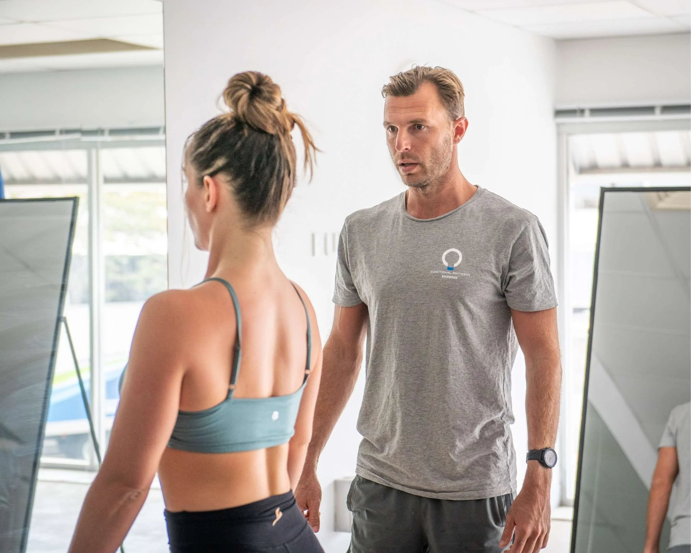
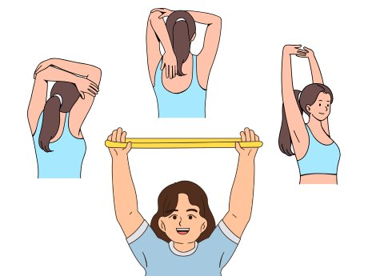

Rounded shoulders, hunched posture, shoulder pain—we see it all the time. People trying to fix rounded shoulders with generic stretches or resistance band workouts that don’t actually address the root cause. The problem? They’re treating symptoms, not systems.
At Functional Patterns Brisbane, we don’t believe in isolating body parts or reinforcing poor mechanics. Our approach to functional, lifted shoulders is grounded in the idea that your posture is a movement problem—not a muscle problem.
Let's explore why your shoulders are rolled forward. We need to understand a few things before you do more curved shoulder exercises.

The Real Cause of Rounded Shoulders Isn’t Just “Weak Back Muscles”
The common story is this: if your shoulder posture is poor, you should stretch your chest muscles. You also need to squeez e your shoulder blades together. But here’s the issue—this only addresses surface-level muscle imbalances, not the deep movement patterns that keep dragging your posture down.
Your body has adapted over long periods of time to move the way it does. Simply pulling the shoulders back while ignoring your spine, pelvis, and gait is like straightening a bent branch without checking the roots.

Why Most Shoulder Exercises Fail
Visit any physical therapist or gym, and you will see people on benches. They pull resistance bands or do “ shoulder exercises for rounded shoulders.” These exercises often do not match how the body moves in real life. Many will simply suggest techniquesrolling shoulders forward or backwards.
Here's what these methods get wrong:
-
They isolate the shoulder joint instead of integrating it into whole-body motion.
-
They teach you to move in straight lines—forward and back—ignoring the rotational and diagonal patterns that define functional human movement.
-
They reinforce static positioning (e.g., “hold your shoulders back”) rather than teaching dynamic stability while walking or standing.

If your program doesn’t involve head posture, ribcage orientation, and the role of the obliques and glutes in shoulder stacking—it’s missing the point.
Rounded Shoulders and the Gait Cycle
Your hunched or round ed shoulders are not just from bad posture. They come from how you move overall. When you're stuck in a forward head posture, shoulder height changes. When your ribs can’t expand properly, your arms can't raise effectively. When your pelvis isn’t rotating, the thoracic spine locks up—and the shoulders and upper back round forward to compensate.
It’s not about just “strengthening the muscles.” It’s about re-patterning the entire sequence of motion so that your shoulder positioning naturally improves as a byproduct of better mechanics.


What NOT to Do During Workouts for Rounded Shoulders
Here are the biggest mistakes we see with people trying to fix rounded shoulders:
-
❌ Holding static stretches for the pecs without addressing spinal and pelvic compression
-
❌ Doing rows with a rigid spine and no rotational flow
-
❌ Taping the shoulders back or using posture-correcting braces (even for severe rounded shoulders)
-
❌ Practicing “ palms face forward” cues without knowing why your palms turned in the first place
-
❌ Focusing only on scapular retraction without integrating breath, rotation, and gait mechanics
These might bring short-term relief, but they won’t deliver lasting change—because they don't target the system that created the dysfunction.
A Better Way to Rebuild Shoulder Posture
At Functional Patterns Brisbane, we assess posture through the lens of human biomechanics. We don’t prescribe a list of exercises for hunched shoulders or shoulder workouts for posture. Instead, we rewire your movement.
Here’s what makes our approach different:
-
We observe how your neck and shoulder mechanics relate to how you walk, breathe, and stabilize
-
We track how your shoulder height shifts as you move through space
-
We address full-body tension and integration between your hips, spine, and shoulders and upper torso
-
We teach you how to stabilize dynamically—not just statically “pull” yourself into shape
The goal isn’t to build rounded shoulders for aesthetics. The goal is to create balanced tension so your shoulder posture improves organically as your body becomes more efficient.

Sleeping, Sitting, and Living with Better Shoulder Positioning
People often ask, “How to sleep to fix rounded shoulders?” or how to sit better. While these are important, the truth is: if your movement patterns are dysfunctional, your posture won’t hold no matter how good your mattress is. Fixing posture starts with functional movement first—not passive habits.
When your body learns to move well, your shoulders will settle into better alignment—even at rest.
Ready to Fix the Cause, Not Just the Symptoms?
If you are tired of doing e xercise s for rounded shoulders, try something different. If your shoulders still roll forward, it may be time for a change. Book a Functional Movement Assessment with us at FP Brisbane—and finally experience what true shoulder posture correction feels like.